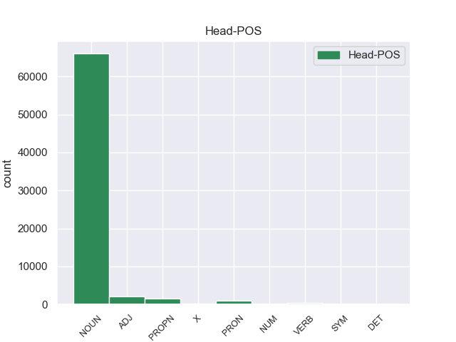
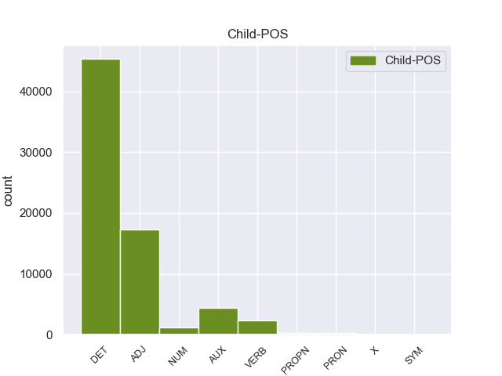

Distribution of features within this leaf



Agreement Rules sorted by frequency.
- When the dependent token is the determiner(det) of the head token, and the dependent token is DET.
1 En _ _ _ _ 0 _ _ _
2 1991 _ _ _ _ 0 _ _ _
3 , _ _ _ _ 0 _ _ _
4 como _ _ _ _ 0 _ _ _
5 ya _ _ _ _ 0 _ _ _
6 está _ _ _ _ 0 _ _ _
7 indicado _ _ _ _ 0 _ _ _
8 en _ _ _ _ 0 _ _ _
9 el _ _ _ _ 0 _ _ _
10 párrafo _ _ _ _ 0 _ _ _
11 anterior _ _ _ _ 0 _ _ _
12 , _ _ _ _ 0 _ _ _
13 se _ _ _ _ 0 _ _ _
14 creó _ _ _ _ 0 _ _ _
15 un _ _ _ _ 0 _ _ _
16 equipo _ _ _ _ 0 _ _ _
17 ad _ _ _ _ 0 _ _ _
18 hoc _ _ _ _ 0 _ _ _
19 para _ _ _ _ 0 _ _ _
20 averiguar _ _ _ _ 0 _ _ _
21 como _ _ _ _ 0 _ _ _
22 se _ _ _ _ 0 _ _ _
23 podía _ _ _ _ 0 _ _ _
24 desarrollar _ _ _ _ 0 _ _ _
25 el _ _ _ _ 0 _ _ _
26 Dialogo _ _ _ _ 0 _ _ _
27 Social _ _ _ _ 0 _ _ _
28 , _ _ _ _ 0 _ _ _
29 este _ _ _ _ 0 _ _ _
30 equipo _ _ _ _ 0 _ _ _
31 estaba _ _ _ _ 0 _ _ _
32 formado _ _ _ _ 0 _ _ _
33 por _ _ _ _ 0 _ _ _
34 representantes _ _ _ _ 0 _ _ _
35 de _ _ _ _ 0 _ _ _
36 todas _ _ _ _ 0 _ _ _
37 las el DET _ Definite=Def|Gender=Fem|Number=Plur|PronType=Art 38 det _ _
38 organizaciones organización NOUN _ Gender=Fem|Number=Plur 0 _ _ _
39 relacionadas _ _ _ _ 0 _ _ _
40 con _ _ _ _ 0 _ _ _
41 CES _ _ _ _ 0 _ _ _
42 , _ _ _ _ 0 _ _ _
43 UNICE _ _ _ _ 0 _ _ _
44 y _ _ _ _ 0 _ _ _
45 CEEP _ _ _ _ 0 _ _ _
46 ; _ _ _ _ 0 _ _ _
1 En _ _ _ _ 0 _ _ _
2 1991 _ _ _ _ 0 _ _ _
3 , _ _ _ _ 0 _ _ _
4 como _ _ _ _ 0 _ _ _
5 ya _ _ _ _ 0 _ _ _
6 está _ _ _ _ 0 _ _ _
7 indicado _ _ _ _ 0 _ _ _
8 en _ _ _ _ 0 _ _ _
9 el _ _ _ _ 0 _ _ _
10 párrafo _ _ _ _ 0 _ _ _
11 anterior _ _ _ _ 0 _ _ _
12 , _ _ _ _ 0 _ _ _
13 se _ _ _ _ 0 _ _ _
14 creó _ _ _ _ 0 _ _ _
15 un _ _ _ _ 0 _ _ _
16 equipo equipo NOUN _ Gender=Masc|Number=Sing 0 _ _ _
17 ad ad ADJ _ Gender=Masc|Number=Sing 16 amod _ _
18 hoc _ _ _ _ 0 _ _ _
19 para _ _ _ _ 0 _ _ _
20 averiguar _ _ _ _ 0 _ _ _
21 como _ _ _ _ 0 _ _ _
22 se _ _ _ _ 0 _ _ _
23 podía _ _ _ _ 0 _ _ _
24 desarrollar _ _ _ _ 0 _ _ _
25 el _ _ _ _ 0 _ _ _
26 Dialogo _ _ _ _ 0 _ _ _
27 Social _ _ _ _ 0 _ _ _
28 , _ _ _ _ 0 _ _ _
29 este _ _ _ _ 0 _ _ _
30 equipo _ _ _ _ 0 _ _ _
31 estaba _ _ _ _ 0 _ _ _
32 formado _ _ _ _ 0 _ _ _
33 por _ _ _ _ 0 _ _ _
34 representantes _ _ _ _ 0 _ _ _
35 de _ _ _ _ 0 _ _ _
36 todas _ _ _ _ 0 _ _ _
37 las _ _ _ _ 0 _ _ _
38 organizaciones _ _ _ _ 0 _ _ _
39 relacionadas _ _ _ _ 0 _ _ _
40 con _ _ _ _ 0 _ _ _
41 CES _ _ _ _ 0 _ _ _
42 , _ _ _ _ 0 _ _ _
43 UNICE _ _ _ _ 0 _ _ _
44 y _ _ _ _ 0 _ _ _
45 CEEP _ _ _ _ 0 _ _ _
46 ; _ _ _ _ 0 _ _ _
1 En _ _ _ _ 0 _ _ _
2 1991 _ _ _ _ 0 _ _ _
3 , _ _ _ _ 0 _ _ _
4 como _ _ _ _ 0 _ _ _
5 ya _ _ _ _ 0 _ _ _
6 está estar AUX _ Mood=Ind|Number=Sing|Person=3|Tense=Pres|VerbForm=Fin 7 cop _ _
7 indicado indicado ADJ _ Gender=Masc|Number=Sing|VerbForm=Part 0 _ _ _
8 en _ _ _ _ 0 _ _ _
9 el _ _ _ _ 0 _ _ _
10 párrafo _ _ _ _ 0 _ _ _
11 anterior _ _ _ _ 0 _ _ _
12 , _ _ _ _ 0 _ _ _
13 se _ _ _ _ 0 _ _ _
14 creó _ _ _ _ 0 _ _ _
15 un _ _ _ _ 0 _ _ _
16 equipo _ _ _ _ 0 _ _ _
17 ad _ _ _ _ 0 _ _ _
18 hoc _ _ _ _ 0 _ _ _
19 para _ _ _ _ 0 _ _ _
20 averiguar _ _ _ _ 0 _ _ _
21 como _ _ _ _ 0 _ _ _
22 se _ _ _ _ 0 _ _ _
23 podía _ _ _ _ 0 _ _ _
24 desarrollar _ _ _ _ 0 _ _ _
25 el _ _ _ _ 0 _ _ _
26 Dialogo _ _ _ _ 0 _ _ _
27 Social _ _ _ _ 0 _ _ _
28 , _ _ _ _ 0 _ _ _
29 este _ _ _ _ 0 _ _ _
30 equipo _ _ _ _ 0 _ _ _
31 estaba _ _ _ _ 0 _ _ _
32 formado _ _ _ _ 0 _ _ _
33 por _ _ _ _ 0 _ _ _
34 representantes _ _ _ _ 0 _ _ _
35 de _ _ _ _ 0 _ _ _
36 todas _ _ _ _ 0 _ _ _
37 las _ _ _ _ 0 _ _ _
38 organizaciones _ _ _ _ 0 _ _ _
39 relacionadas _ _ _ _ 0 _ _ _
40 con _ _ _ _ 0 _ _ _
41 CES _ _ _ _ 0 _ _ _
42 , _ _ _ _ 0 _ _ _
43 UNICE _ _ _ _ 0 _ _ _
44 y _ _ _ _ 0 _ _ _
45 CEEP _ _ _ _ 0 _ _ _
46 ; _ _ _ _ 0 _ _ _
1 En _ _ _ _ 0 _ _ _
2 1991 _ _ _ _ 0 _ _ _
3 , _ _ _ _ 0 _ _ _
4 como _ _ _ _ 0 _ _ _
5 ya _ _ _ _ 0 _ _ _
6 está _ _ _ _ 0 _ _ _
7 indicado _ _ _ _ 0 _ _ _
8 en _ _ _ _ 0 _ _ _
9 el _ _ _ _ 0 _ _ _
10 párrafo _ _ _ _ 0 _ _ _
11 anterior _ _ _ _ 0 _ _ _
12 , _ _ _ _ 0 _ _ _
13 se _ _ _ _ 0 _ _ _
14 creó _ _ _ _ 0 _ _ _
15 un _ _ _ _ 0 _ _ _
16 equipo _ _ _ _ 0 _ _ _
17 ad _ _ _ _ 0 _ _ _
18 hoc _ _ _ _ 0 _ _ _
19 para _ _ _ _ 0 _ _ _
20 averiguar _ _ _ _ 0 _ _ _
21 como _ _ _ _ 0 _ _ _
22 se _ _ _ _ 0 _ _ _
23 podía _ _ _ _ 0 _ _ _
24 desarrollar _ _ _ _ 0 _ _ _
25 el _ _ _ _ 0 _ _ _
26 Dialogo _ _ _ _ 0 _ _ _
27 Social _ _ _ _ 0 _ _ _
28 , _ _ _ _ 0 _ _ _
29 este _ _ _ _ 0 _ _ _
30 equipo _ _ _ _ 0 _ _ _
31 estaba _ _ _ _ 0 _ _ _
32 formado _ _ _ _ 0 _ _ _
33 por _ _ _ _ 0 _ _ _
34 representantes _ _ _ _ 0 _ _ _
35 de _ _ _ _ 0 _ _ _
36 todas _ _ _ _ 0 _ _ _
37 las _ _ _ _ 0 _ _ _
38 organizaciones organización NOUN _ Gender=Fem|Number=Plur 0 _ _ _
39 relacionadas relacionado VERB _ Gender=Fem|Number=Plur|VerbForm=Part 38 acl _ _
40 con _ _ _ _ 0 _ _ _
41 CES _ _ _ _ 0 _ _ _
42 , _ _ _ _ 0 _ _ _
43 UNICE _ _ _ _ 0 _ _ _
44 y _ _ _ _ 0 _ _ _
45 CEEP _ _ _ _ 0 _ _ _
46 ; _ _ _ _ 0 _ _ _
1 La _ _ _ _ 0 _ _ _
2 telenovela _ _ _ _ 0 _ _ _
3 gira _ _ _ _ 0 _ _ _
4 en _ _ _ _ 0 _ _ _
5 torno _ _ _ _ 0 _ _ _
6 a _ _ _ _ 0 _ _ _
7 los _ _ _ _ 0 _ _ _
8 dramas _ _ _ _ 0 _ _ _
9 familiares _ _ _ _ 0 _ _ _
10 y _ _ _ _ 0 _ _ _
11 poderes _ _ _ _ 0 _ _ _
12 empresariales _ _ _ _ 0 _ _ _
13 de _ _ _ _ 0 _ _ _
14 dos dos NUM _ Number=Plur|NumType=Card 15 nummod _ _
15 familias familia NOUN _ Gender=Fem|Number=Plur 0 _ _ _
16 rivales _ _ _ _ 0 _ _ _
17 . _ _ _ _ 0 _ _ _
1 Ahora _ _ _ _ 0 _ _ _
2 se _ _ _ _ 0 _ _ _
3 aunan _ _ _ _ 0 _ _ _
4 cocina _ _ _ _ 0 _ _ _
5 y _ _ _ _ 0 _ _ _
6 entorno _ _ _ _ 0 _ _ _
7 , _ _ _ _ 0 _ _ _
8 me _ _ _ _ 0 _ _ _
9 encanto _ _ _ _ 0 _ _ _
10 la _ _ _ _ 0 _ _ _
11 bodega _ _ _ _ 0 _ _ _
12 , _ _ _ _ 0 _ _ _
13 las _ _ _ _ 0 _ _ _
14 sillas _ _ _ _ 0 _ _ _
15 son _ _ _ _ 0 _ _ _
16 comodisimas _ _ _ _ 0 _ _ _
17 , _ _ _ _ 0 _ _ _
18 la _ _ _ _ 0 _ _ _
19 iluminacion _ _ _ _ 0 _ _ _
20 es _ _ _ _ 0 _ _ _
21 excepcional _ _ _ _ 0 _ _ _
22 , _ _ _ _ 0 _ _ _
23 alcanzas _ _ _ _ 0 _ _ _
24 un _ _ _ _ 0 _ _ _
25 grado _ _ _ _ 0 _ _ _
26 de _ _ _ _ 0 _ _ _
27 satisfaccion _ _ _ _ 0 _ _ _
28 que _ _ _ _ 0 _ _ _
29 no _ _ _ _ 0 _ _ _
30 se _ _ _ _ 0 _ _ _
31 puede _ _ _ _ 0 _ _ _
32 describir _ _ _ _ 0 _ _ _
33 , _ _ _ _ 0 _ _ _
34 hay _ _ _ _ 0 _ _ _
35 que _ _ _ _ 0 _ _ _
36 probar _ _ _ _ 0 _ _ _
37 lo _ _ _ _ 0 _ _ _
38 , _ _ _ _ 0 _ _ _
39 es _ _ _ _ 0 _ _ _
40 la _ _ _ _ 0 _ _ _
41 primera primero ADJ _ Gender=Fem|Number=Sing|NumType=Ord 42 nummod _ _
42 vez vez NOUN _ Gender=Fem|Number=Sing 0 _ _ _
43 en _ _ _ _ 0 _ _ _
44 mi _ _ _ _ 0 _ _ _
45 vda _ _ _ _ 0 _ _ _
46 que _ _ _ _ 0 _ _ _
47 una _ _ _ _ 0 _ _ _
48 cocina _ _ _ _ 0 _ _ _
49 me _ _ _ _ 0 _ _ _
50 emociona _ _ _ _ 0 _ _ _
51 hasta _ _ _ _ 0 _ _ _
52 ese _ _ _ _ 0 _ _ _
53 punto _ _ _ _ 0 _ _ _
54 . _ _ _ _ 0 _ _ _
1 Pero _ _ _ _ 0 _ _ _
2 no _ _ _ _ 0 _ _ _
3 escogieron _ _ _ _ 0 _ _ _
4 por _ _ _ _ 0 _ _ _
5 irrumpir _ _ _ _ 0 _ _ _
6 en _ _ _ _ 0 _ _ _
7 las _ _ _ _ 0 _ _ _
8 oficinas _ _ _ _ 0 _ _ _
9 de _ _ _ _ 0 _ _ _
10 la _ _ _ _ 0 _ _ _
11 Intendencia _ _ _ _ 0 _ _ _
12 , _ _ _ _ 0 _ _ _
13 que _ _ _ _ 0 _ _ _
14 seria seriar VERB _ Mood=Ind|Number=Sing|Person=3|Tense=Pres|VerbForm=Fin 16 cop _ _
15 el _ _ _ _ 0 _ _ _
16 escenario escenario NOUN _ Gender=Masc|Number=Sing 0 _ _ _
17 mas _ _ _ _ 0 _ _ _
18 adecuado _ _ _ _ 0 _ _ _
19 para _ _ _ _ 0 _ _ _
20 ventilar _ _ _ _ 0 _ _ _
21 sus _ _ _ _ 0 _ _ _
22 reclamos _ _ _ _ 0 _ _ _
23 . _ _ _ _ 0 _ _ _
1 Jazmin _ _ _ _ 0 _ _ _
2 es _ _ _ _ 0 _ _ _
3 todo _ _ _ _ 0 _ _ _
4 lo él PRON _ Case=Acc|Gender=Masc|Number=Sing|Person=3|PrepCase=Npr|PronType=Prs 5 det _ _
5 contrario contrario NOUN _ Gender=Masc|Number=Sing 0 _ _ _
6 , _ _ _ _ 0 _ _ _
7 es _ _ _ _ 0 _ _ _
8 tímida _ _ _ _ 0 _ _ _
9 y _ _ _ _ 0 _ _ _
10 callada _ _ _ _ 0 _ _ _
11 , _ _ _ _ 0 _ _ _
12 pero _ _ _ _ 0 _ _ _
13 siempre _ _ _ _ 0 _ _ _
14 es _ _ _ _ 0 _ _ _
15 arrastrada _ _ _ _ 0 _ _ _
16 por _ _ _ _ 0 _ _ _
17 las _ _ _ _ 0 _ _ _
18 locuras _ _ _ _ 0 _ _ _
19 y _ _ _ _ 0 _ _ _
20 travesuras _ _ _ _ 0 _ _ _
21 que _ _ _ _ 0 _ _ _
22 inventa _ _ _ _ 0 _ _ _
23 Alma _ _ _ _ 0 _ _ _
24 . _ _ _ _ 0 _ _ _
1 A _ _ _ _ 0 _ _ _
2 continuación _ _ _ _ 0 _ _ _
3 , _ _ _ _ 0 _ _ _
4 sonarán _ _ _ _ 0 _ _ _
5 los _ _ _ _ 0 _ _ _
6 ritmos _ _ _ _ 0 _ _ _
7 más _ _ _ _ 0 _ _ _
8 intensos _ _ _ _ 0 _ _ _
9 de _ _ _ _ 0 _ _ _
10 los _ _ _ _ 0 _ _ _
11 llanos _ _ _ _ 0 _ _ _
12 interpretados _ _ _ _ 0 _ _ _
13 por _ _ _ _ 0 _ _ _
14 una _ _ _ _ 0 _ _ _
15 agrupación _ _ _ _ 0 _ _ _
16 que _ _ _ _ 0 _ _ _
17 romperá _ _ _ _ 0 _ _ _
18 esquemas _ _ _ _ 0 _ _ _
19 : _ _ _ _ 0 _ _ _
20 el _ _ _ _ 0 _ _ _
21 Ensamble _ _ _ _ 0 _ _ _
22 de _ _ _ _ 0 _ _ _
23 Arpas _ _ _ _ 0 _ _ _
24 de _ _ _ _ 0 _ _ _
25 la _ _ _ _ 0 _ _ _
26 Orquesta _ _ _ _ 0 _ _ _
27 de _ _ _ _ 0 _ _ _
28 Música música PROPN _ Gender=Fem|Number=Sing 0 _ _ _
29 Popular popular PROPN _ Number=Sing 28 amod _ _
30 de _ _ _ _ 0 _ _ _
31 el _ _ _ _ 0 _ _ _
32 Estado _ _ _ _ 0 _ _ _
33 Guárico _ _ _ _ 0 _ _ _
34 , _ _ _ _ 0 _ _ _
35 integrado _ _ _ _ 0 _ _ _
36 por _ _ _ _ 0 _ _ _
37 14 _ _ _ _ 0 _ _ _
38 ejecutantes _ _ _ _ 0 _ _ _
39 , _ _ _ _ 0 _ _ _
40 todos _ _ _ _ 0 _ _ _
41 formados _ _ _ _ 0 _ _ _
42 por _ _ _ _ 0 _ _ _
43 El _ _ _ _ 0 _ _ _
44 Sistema _ _ _ _ 0 _ _ _
45 , _ _ _ _ 0 _ _ _
46 siendo _ _ _ _ 0 _ _ _
47 algunos _ _ _ _ 0 _ _ _
48 de _ _ _ _ 0 _ _ _
49 ellos _ _ _ _ 0 _ _ _
50 ganadores _ _ _ _ 0 _ _ _
51 de _ _ _ _ 0 _ _ _
52 el _ _ _ _ 0 _ _ _
53 reconocido _ _ _ _ 0 _ _ _
54 Festival _ _ _ _ 0 _ _ _
55 Internacional _ _ _ _ 0 _ _ _
56 de _ _ _ _ 0 _ _ _
57 Arpas _ _ _ _ 0 _ _ _
58 Infantil _ _ _ _ 0 _ _ _
59 y _ _ _ _ 0 _ _ _
60 Adultos _ _ _ _ 0 _ _ _
61 de _ _ _ _ 0 _ _ _
62 Villavicencio _ _ _ _ 0 _ _ _
63 , _ _ _ _ 0 _ _ _
64 Colombia _ _ _ _ 0 _ _ _
65 . _ _ _ _ 0 _ _ _
1 Joramun _ _ _ _ 0 _ _ _
2 se _ _ _ _ 0 _ _ _
3 supone _ _ _ _ 0 _ _ _
4 que _ _ _ _ 0 _ _ _
5 era _ _ _ _ 0 _ _ _
6 un _ _ _ _ 0 _ _ _
7 legendario _ _ _ _ 0 _ _ _
8 Rey _ _ _ _ 0 _ _ _
9 - _ _ _ _ 0 _ _ _
10 Más _ _ _ _ 0 _ _ _
11 - _ _ _ _ 0 _ _ _
12 Allá _ _ _ _ 0 _ _ _
13 - _ _ _ _ 0 _ _ _
14 de _ _ _ _ 0 _ _ _
15 el _ _ _ _ 0 _ _ _
16 - _ _ _ _ 0 _ _ _
17 Muro _ _ _ _ 0 _ _ _
18 , _ _ _ _ 0 _ _ _
19 a _ _ _ _ 0 _ _ _
20 el _ _ _ _ 0 _ _ _
21 norte _ _ _ _ 0 _ _ _
22 de _ _ _ _ 0 _ _ _
23 los _ _ _ _ 0 _ _ _
24 Siete siete PROPN _ Number=Plur 25 nummod _ _
25 Reinos reino PROPN _ Gender=Masc|Number=Plur 0 _ _ _
26 . _ _ _ _ 0 _ _ _
1 Tebacas _ _ _ _ 0 _ _ _
2 fue _ _ _ _ 0 _ _ _
3 un _ _ _ _ 0 _ _ _
4 pueblo _ _ _ _ 0 _ _ _
5 indígena _ _ _ _ 0 _ _ _
6 que _ _ _ _ 0 _ _ _
7 habitó _ _ _ _ 0 _ _ _
8 en _ _ _ _ 0 _ _ _
9 los _ _ _ _ 0 _ _ _
10 municipios _ _ _ _ 0 _ _ _
11 de _ _ _ _ 0 _ _ _
12 Culiacán _ _ _ _ 0 _ _ _
13 y _ _ _ _ 0 _ _ _
14 Badiraguato _ _ _ _ 0 _ _ _
15 hasta _ _ _ _ 0 _ _ _
16 colindar _ _ _ _ 0 _ _ _
17 con _ _ _ _ 0 _ _ _
18 el _ _ _ _ 0 _ _ _
19 grupo grupo NOUN _ Gender=Masc|Number=Sing 0 _ _ _
20 cahita cahita X _ Number=Sing 19 amod _ _
21 de _ _ _ _ 0 _ _ _
22 los _ _ _ _ 0 _ _ _
23 sinaloas _ _ _ _ 0 _ _ _
24 . _ _ _ _ 0 _ _ _
1 Dichas dicho ADJ _ Gender=Fem|Number=Plur|VerbForm=Part 2 det _ _
2 acciones acción NOUN _ Gender=Fem|Number=Plur 0 _ _ _
3 fueron _ _ _ _ 0 _ _ _
4 el _ _ _ _ 0 _ _ _
5 principal _ _ _ _ 0 _ _ _
6 mecanismo _ _ _ _ 0 _ _ _
7 para _ _ _ _ 0 _ _ _
8 hacer _ _ _ _ 0 _ _ _
9 notar _ _ _ _ 0 _ _ _
10 su _ _ _ _ 0 _ _ _
11 descontento _ _ _ _ 0 _ _ _
12 con _ _ _ _ 0 _ _ _
13 sectores _ _ _ _ 0 _ _ _
14 públicos _ _ _ _ 0 _ _ _
15 y _ _ _ _ 0 _ _ _
16 privados _ _ _ _ 0 _ _ _
17 peruanos _ _ _ _ 0 _ _ _
18 . _ _ _ _ 0 _ _ _
1 Una _ _ _ _ 0 _ _ _
2 variedad _ _ _ _ 0 _ _ _
3 cultivada _ _ _ _ 0 _ _ _
4 , _ _ _ _ 0 _ _ _
5 a _ _ _ _ 0 _ _ _
6 veces _ _ _ _ 0 _ _ _
7 también _ _ _ _ 0 _ _ _
8 denominada _ _ _ _ 0 _ _ _
9 por _ _ _ _ 0 _ _ _
10 su _ _ _ _ 0 _ _ _
11 nombre _ _ _ _ 0 _ _ _
12 en _ _ _ _ 0 _ _ _
13 inglés _ _ _ _ 0 _ _ _
14 , _ _ _ _ 0 _ _ _
15 cultivar _ _ _ _ 0 _ _ _
16 ( _ _ _ _ 0 _ _ _
17 contracción _ _ _ _ 0 _ _ _
18 de _ _ _ _ 0 _ _ _
19 cultivated cultivated PROPN _ Gender=Fem|Number=Sing 20 acl _ _
20 variety variety PROPN _ Number=Sing 0 _ _ _
21 ) _ _ _ _ 0 _ _ _
22 , _ _ _ _ 0 _ _ _
23 es _ _ _ _ 0 _ _ _
24 un _ _ _ _ 0 _ _ _
25 término _ _ _ _ 0 _ _ _
26 empleado _ _ _ _ 0 _ _ _
27 en _ _ _ _ 0 _ _ _
28 Botánica _ _ _ _ 0 _ _ _
29 y _ _ _ _ 0 _ _ _
30 agronomía _ _ _ _ 0 _ _ _
31 para _ _ _ _ 0 _ _ _
32 aquellas _ _ _ _ 0 _ _ _
33 poblaciones _ _ _ _ 0 _ _ _
34 de _ _ _ _ 0 _ _ _
35 plantas _ _ _ _ 0 _ _ _
36 cultivadas _ _ _ _ 0 _ _ _
37 que _ _ _ _ 0 _ _ _
38 son _ _ _ _ 0 _ _ _
39 genéticamente _ _ _ _ 0 _ _ _
40 homogéneas _ _ _ _ 0 _ _ _
41 y _ _ _ _ 0 _ _ _
42 ( _ _ _ _ 0 _ _ _
43 1 _ _ _ _ 0 _ _ _
44 ) _ _ _ _ 0 _ _ _
45 comparten _ _ _ _ 0 _ _ _
46 características _ _ _ _ 0 _ _ _
47 de _ _ _ _ 0 _ _ _
48 relevancia _ _ _ _ 0 _ _ _
49 agrícola _ _ _ _ 0 _ _ _
50 que _ _ _ _ 0 _ _ _
51 permiten _ _ _ _ 0 _ _ _
52 distinguir _ _ _ _ 0 _ _ _
53 claramente _ _ _ _ 0 _ _ _
54 a _ _ _ _ 0 _ _ _
55 la _ _ _ _ 0 _ _ _
56 población _ _ _ _ 0 _ _ _
57 de _ _ _ _ 0 _ _ _
58 las _ _ _ _ 0 _ _ _
59 demás _ _ _ _ 0 _ _ _
60 poblaciones _ _ _ _ 0 _ _ _
61 de _ _ _ _ 0 _ _ _
62 la _ _ _ _ 0 _ _ _
63 especie _ _ _ _ 0 _ _ _
64 y _ _ _ _ 0 _ _ _
65 ( _ _ _ _ 0 _ _ _
66 2 _ _ _ _ 0 _ _ _
67 ) _ _ _ _ 0 _ _ _
68 traspasan _ _ _ _ 0 _ _ _
69 estas _ _ _ _ 0 _ _ _
70 características _ _ _ _ 0 _ _ _
71 de _ _ _ _ 0 _ _ _
72 generación _ _ _ _ 0 _ _ _
73 en _ _ _ _ 0 _ _ _
74 generación _ _ _ _ 0 _ _ _
75 , _ _ _ _ 0 _ _ _
76 de _ _ _ _ 0 _ _ _
77 forma _ _ _ _ 0 _ _ _
78 sexual _ _ _ _ 0 _ _ _
79 o _ _ _ _ 0 _ _ _
80 asexual _ _ _ _ 0 _ _ _
81 . _ _ _ _ 0 _ _ _
1 En _ _ _ _ 0 _ _ _
2 ocasiones _ _ _ _ 0 _ _ _
3 , _ _ _ _ 0 _ _ _
4 G. _ _ _ _ 0 _ _ _
5 marmoratus _ _ _ _ 0 _ _ _
6 puede _ _ _ _ 0 _ _ _
7 quedar _ _ _ _ 0 _ _ _
8 atrapado atrapado ADJ _ Gender=Masc|Number=Sing|VerbForm=Part 0 _ _ _
9 en _ _ _ _ 0 _ _ _
10 pozas _ _ _ _ 0 _ _ _
11 litorales _ _ _ _ 0 _ _ _
12 a _ _ _ _ 0 _ _ _
13 medida _ _ _ _ 0 _ _ _
14 que _ _ _ _ 0 _ _ _
15 baja _ _ _ _ 0 _ _ _
16 la _ _ _ _ 0 _ _ _
17 marea _ _ _ _ 0 _ _ _
18 , _ _ _ _ 0 _ _ _
19 quedando _ _ _ _ 0 _ _ _
20 expuesto expuesto ADJ _ Gender=Masc|Number=Sing|VerbForm=Part 8 acl _ _
21 a _ _ _ _ 0 _ _ _
22 alzas _ _ _ _ 0 _ _ _
23 de _ _ _ _ 0 _ _ _
24 temperatura _ _ _ _ 0 _ _ _
25 , _ _ _ _ 0 _ _ _
26 salinidad _ _ _ _ 0 _ _ _
27 y _ _ _ _ 0 _ _ _
28 desecación _ _ _ _ 0 _ _ _
29 . _ _ _ _ 0 _ _ _
1 Su _ _ _ _ 0 _ _ _
2 modelo _ _ _ _ 0 _ _ _
3 y _ _ _ _ 0 _ _ _
4 compañera _ _ _ _ 0 _ _ _
5 era _ _ _ _ 0 _ _ _
6 Annah _ _ _ _ 0 _ _ _
7 llamadaa llamadaa ADJ _ Gender=Fem|Number=Sing 10 cop _ _
8 « _ _ _ _ 0 _ _ _
9 la _ _ _ _ 0 _ _ _
10 javanesa javanés NOUN _ Gender=Fem|Number=Sing 0 _ _ _
11 » _ _ _ _ 0 _ _ _
12 , _ _ _ _ 0 _ _ _
13 una _ _ _ _ 0 _ _ _
14 mestiza _ _ _ _ 0 _ _ _
15 de _ _ _ _ 0 _ _ _
16 origen _ _ _ _ 0 _ _ _
17 y _ _ _ _ 0 _ _ _
18 edad _ _ _ _ 0 _ _ _
19 desconocidas _ _ _ _ 0 _ _ _
20 . _ _ _ _ 0 _ _ _
1 Tras _ _ _ _ 0 _ _ _
2 la _ _ _ _ 0 _ _ _
3 Guerra _ _ _ _ 0 _ _ _
4 civil _ _ _ _ 0 _ _ _
5 española _ _ _ _ 0 _ _ _
6 , _ _ _ _ 0 _ _ _
7 pasa _ _ _ _ 0 _ _ _
8 por _ _ _ _ 0 _ _ _
9 la _ _ _ _ 0 _ _ _
10 compañía _ _ _ _ 0 _ _ _
11 de _ _ _ _ 0 _ _ _
12 Mariano _ _ _ _ 0 _ _ _
13 Asquerino _ _ _ _ 0 _ _ _
14 e _ _ _ _ 0 _ _ _
15 Irene _ _ _ _ 0 _ _ _
16 López _ _ _ _ 0 _ _ _
17 Heredia _ _ _ _ 0 _ _ _
18 , _ _ _ _ 0 _ _ _
19 con _ _ _ _ 0 _ _ _
20 los _ _ _ _ 0 _ _ _
21 que _ _ _ _ 0 _ _ _
22 interviene _ _ _ _ 0 _ _ _
23 en _ _ _ _ 0 _ _ _
24 La _ _ _ _ 0 _ _ _
25 corte _ _ _ _ 0 _ _ _
26 de _ _ _ _ 0 _ _ _
27 los _ _ _ _ 0 _ _ _
28 truhanes _ _ _ _ 0 _ _ _
29 ( _ _ _ _ 0 _ _ _
30 1939 _ _ _ _ 0 _ _ _
31 ) _ _ _ _ 0 _ _ _
32 y _ _ _ _ 0 _ _ _
33 por _ _ _ _ 0 _ _ _
34 la _ _ _ _ 0 _ _ _
35 de _ _ _ _ 0 _ _ _
36 Rafael _ _ _ _ 0 _ _ _
37 Rivelles _ _ _ _ 0 _ _ _
38 , _ _ _ _ 0 _ _ _
39 con _ _ _ _ 0 _ _ _
40 quien _ _ _ _ 0 _ _ _
41 coincide _ _ _ _ 0 _ _ _
42 en _ _ _ _ 0 _ _ _
43 ¿ _ _ _ _ 0 _ _ _
44 Quién quién PROPN _ Number=Sing 0 _ _ _
45 soy ser PROPN _ Number=Sing 44 cop _ _
46 yo _ _ _ _ 0 _ _ _
47 ... _ _ _ _ 0 _ _ _
48 ? _ _ _ _ 0 _ _ _
1 Los _ _ _ _ 0 _ _ _
2 soldados _ _ _ _ 0 _ _ _
3 y _ _ _ _ 0 _ _ _
4 la _ _ _ _ 0 _ _ _
5 familia _ _ _ _ 0 _ _ _
6 dejan _ _ _ _ 0 _ _ _
7 a _ _ _ _ 0 _ _ _
8 Števa _ _ _ _ 0 _ _ _
9 y _ _ _ _ 0 _ _ _
10 Jenůfa _ _ _ _ 0 _ _ _
11 a _ _ _ _ 0 _ _ _
12 solas _ _ _ _ 0 _ _ _
13 , _ _ _ _ 0 _ _ _
14 y _ _ _ _ 0 _ _ _
15 ella _ _ _ _ 0 _ _ _
16 le _ _ _ _ 0 _ _ _
17 ruega _ _ _ _ 0 _ _ _
18 que _ _ _ _ 0 _ _ _
19 la _ _ _ _ 0 _ _ _
20 ame _ _ _ _ 0 _ _ _
21 , _ _ _ _ 0 _ _ _
22 pero _ _ _ _ 0 _ _ _
23 él _ _ _ _ 0 _ _ _
24 , _ _ _ _ 0 _ _ _
25 sin _ _ _ _ 0 _ _ _
26 conocer _ _ _ _ 0 _ _ _
27 su _ _ _ _ 0 _ _ _
28 embarazo _ _ _ _ 0 _ _ _
29 , _ _ _ _ 0 _ _ _
30 le _ _ _ _ 0 _ _ _
31 da _ _ _ _ 0 _ _ _
32 contestaciones contestación NOUN _ Gender=Fem|Number=Plur 0 _ _ _
33 distraídas distraído VERB _ Gender=Fem|Number=Plur|VerbForm=Part 32 amod _ _
34 y _ _ _ _ 0 _ _ _
35 se _ _ _ _ 0 _ _ _
36 marcha _ _ _ _ 0 _ _ _
37 . _ _ _ _ 0 _ _ _
1 Me _ _ _ _ 0 _ _ _
2 voy _ _ _ _ 0 _ _ _
3 a _ _ _ _ 0 _ _ _
4 argentina _ _ _ _ 0 _ _ _
5 por _ _ _ _ 0 _ _ _
6 motivos _ _ _ _ 0 _ _ _
7 laborales _ _ _ _ 0 _ _ _
8 , _ _ _ _ 0 _ _ _
9 pregunté _ _ _ _ 0 _ _ _
10 y _ _ _ _ 0 _ _ _
11 varias _ _ _ _ 0 _ _ _
12 personas _ _ _ _ 0 _ _ _
13 me _ _ _ _ 0 _ _ _
14 recomendaron _ _ _ _ 0 _ _ _
15 está estar VERB _ Mood=Ind|Number=Sing|Person=3|Tense=Pres|VerbForm=Fin 16 det _ _
16 compañia compañio NOUN _ Gender=Fem|Number=Sing 0 _ _ _
17 para _ _ _ _ 0 _ _ _
18 la _ _ _ _ 0 _ _ _
19 mudanza _ _ _ _ 0 _ _ _
20 , _ _ _ _ 0 _ _ _
21 de _ _ _ _ 0 _ _ _
22 momento _ _ _ _ 0 _ _ _
23 todo _ _ _ _ 0 _ _ _
24 va _ _ _ _ 0 _ _ _
25 bien _ _ _ _ 0 _ _ _
26 . _ _ _ _ 0 _ _ _
1 Ella _ _ _ _ 0 _ _ _
2 y _ _ _ _ 0 _ _ _
3 los _ _ _ _ 0 _ _ _
4 criollos _ _ _ _ 0 _ _ _
5 fueron _ _ _ _ 0 _ _ _
6 traicionados _ _ _ _ 0 _ _ _
7 por _ _ _ _ 0 _ _ _
8 Facundo _ _ _ _ 0 _ _ _
9 Tovar _ _ _ _ 0 _ _ _
10 , _ _ _ _ 0 _ _ _
11 un _ _ _ _ 0 _ _ _
12 supuesto _ _ _ _ 0 _ _ _
13 aliado _ _ _ _ 0 _ _ _
14 que _ _ _ _ 0 _ _ _
15 era _ _ _ _ 0 _ _ _
16 nada nada PRON _ Number=Sing|PronType=Neg 20 cop _ _
17 menos _ _ _ _ 0 _ _ _
18 que _ _ _ _ 0 _ _ _
19 un _ _ _ _ 0 _ _ _
20 infiltrado infiltrado NOUN _ Gender=Masc|Number=Sing|VerbForm=Part 0 _ _ _
21 a _ _ _ _ 0 _ _ _
22 el _ _ _ _ 0 _ _ _
23 servicio _ _ _ _ 0 _ _ _
24 de _ _ _ _ 0 _ _ _
25 los _ _ _ _ 0 _ _ _
26 españoles _ _ _ _ 0 _ _ _
27 . _ _ _ _ 0 _ _ _
1 Nos _ _ _ _ 0 _ _ _
2 insultaron _ _ _ _ 0 _ _ _
3 y _ _ _ _ 0 _ _ _
4 nos _ _ _ _ 0 _ _ _
5 faltaron _ _ _ _ 0 _ _ _
6 al al X _ Gender=Masc|Number=Sing 7 det _ _
7 respeto respeto NOUN _ Gender=Masc|Number=Sing 0 _ _ _
8 por _ _ _ _ 0 _ _ _
9 pedir _ _ _ _ 0 _ _ _
10 la _ _ _ _ 0 _ _ _
11 hoja _ _ _ _ 0 _ _ _
12 de _ _ _ _ 0 _ _ _
13 reclamaciones _ _ _ _ 0 _ _ _
14 ! _ _ _ _ 0 _ _ _
1 Iván iván PROPN _ Gender=Masc|Number=Sing 0 _ _ _
2 Daniel _ _ _ _ 0 _ _ _
3 Valenzuela _ _ _ _ 0 _ _ _
4 Urra _ _ _ _ 0 _ _ _
5 ( _ _ _ _ 0 _ _ _
6 n. n. X _ Gender=Masc|Number=Sing 1 acl _ _
7 Rancagua _ _ _ _ 0 _ _ _
8 , _ _ _ _ 0 _ _ _
9 3 _ _ _ _ 0 _ _ _
10 de _ _ _ _ 0 _ _ _
11 mayo _ _ _ _ 0 _ _ _
12 de _ _ _ _ 0 _ _ _
13 1966 _ _ _ _ 0 _ _ _
14 ) _ _ _ _ 0 _ _ _
15 es _ _ _ _ 0 _ _ _
16 un _ _ _ _ 0 _ _ _
17 periodista _ _ _ _ 0 _ _ _
18 chileno _ _ _ _ 0 _ _ _
19 . _ _ _ _ 0 _ _ _
1 De _ _ _ _ 0 _ _ _
2 hecho _ _ _ _ 0 _ _ _
3 , _ _ _ _ 0 _ _ _
4 los _ _ _ _ 0 _ _ _
5 comerciantes _ _ _ _ 0 _ _ _
6 vikingos _ _ _ _ 0 _ _ _
7 extendieron _ _ _ _ 0 _ _ _
8 la _ _ _ _ 0 _ _ _
9 lengua lengua NOUN _ Gender=Fem|Number=Sing 0 _ _ _
10 por _ _ _ _ 0 _ _ _
11 Europa _ _ _ _ 0 _ _ _
12 hasta _ _ _ _ 0 _ _ _
13 Rusia _ _ _ _ 0 _ _ _
14 , _ _ _ _ 0 _ _ _
15 haciendo _ _ _ _ 0 _ _ _
16 de _ _ _ _ 0 _ _ _
17 el _ _ _ _ 0 _ _ _
18 nórdico _ _ _ _ 0 _ _ _
19 antiguo _ _ _ _ 0 _ _ _
20 una uno PRON _ Gender=Fem|Number=Sing|PronType=Ind 9 acl _ _
21 de _ _ _ _ 0 _ _ _
22 las _ _ _ _ 0 _ _ _
23 lenguas _ _ _ _ 0 _ _ _
24 más _ _ _ _ 0 _ _ _
25 extendidas _ _ _ _ 0 _ _ _
26 de _ _ _ _ 0 _ _ _
27 su _ _ _ _ 0 _ _ _
28 tiempo _ _ _ _ 0 _ _ _
29 . _ _ _ _ 0 _ _ _
1 El _ _ _ _ 0 _ _ _
2 sitio _ _ _ _ 0 _ _ _
3 web _ _ _ _ 0 _ _ _
4 fue _ _ _ _ 0 _ _ _
5 cerrado _ _ _ _ 0 _ _ _
6 tras _ _ _ _ 0 _ _ _
7 el _ _ _ _ 0 _ _ _
8 ataque _ _ _ _ 0 _ _ _
9 después _ _ _ _ 0 _ _ _
10 unas uno DET _ Definite=Ind|Gender=Fem|Number=Plur|PronType=Art 12 nummod _ _
11 cuantas _ _ _ _ 0 _ _ _
12 horas hora NOUN _ Gender=Fem|Number=Plur 0 _ _ _
13 . _ _ _ _ 0 _ _ _
1 Hojas _ _ _ _ 0 _ _ _
2 opuestas _ _ _ _ 0 _ _ _
3 , _ _ _ _ 0 _ _ _
4 ovales _ _ _ _ 0 _ _ _
5 , _ _ _ _ 0 _ _ _
6 caducas _ _ _ _ 0 _ _ _
7 y _ _ _ _ 0 _ _ _
8 de _ _ _ _ 0 _ _ _
9 bordes _ _ _ _ 0 _ _ _
10 dentados _ _ _ _ 0 _ _ _
11 con _ _ _ _ 0 _ _ _
12 2-4 _ _ _ _ 0 _ _ _
13 pares _ _ _ _ 0 _ _ _
14 de _ _ _ _ 0 _ _ _
15 nervios _ _ _ _ 0 _ _ _
16 laterales _ _ _ _ 0 _ _ _
17 muy _ _ _ _ 0 _ _ _
18 marcados _ _ _ _ 0 _ _ _
19 y _ _ _ _ 0 _ _ _
20 de _ _ _ _ 0 _ _ _
21 color _ _ _ _ 0 _ _ _
22 verde _ _ _ _ 0 _ _ _
23 brillante _ _ _ _ 0 _ _ _
24 de _ _ _ _ 0 _ _ _
25 2-6 2-6 X _ Gender=Masc|Number=Sing 26 nummod _ _
26 cm cm SYM _ Gender=Masc|Number=Sing 0 _ _ _
27 de _ _ _ _ 0 _ _ _
28 longitud _ _ _ _ 0 _ _ _
29 . _ _ _ _ 0 _ _ _
1 La _ _ _ _ 0 _ _ _
2 densidad _ _ _ _ 0 _ _ _
3 de _ _ _ _ 0 _ _ _
4 población _ _ _ _ 0 _ _ _
5 es _ _ _ _ 0 _ _ _
6 de _ _ _ _ 0 _ _ _
7 90 _ _ _ _ 0 _ _ _
8 hab _ _ _ _ 0 _ _ _
9 / _ _ _ _ 0 _ _ _
10 km _ _ _ _ 0 _ _ _
11 ² _ _ _ _ 0 _ _ _
12 ( _ _ _ _ 0 _ _ _
13 234 _ _ _ _ 0 _ _ _
14 hab _ _ _ _ 0 _ _ _
15 / _ _ _ _ 0 _ _ _
16 mi mi X _ Number=Sing|Person=1 0 _ _ _
17 ² ² SYM _ Gender=Masc|Number=Sing 16 amod _ SpaceAfter=No
18 ) _ _ _ _ 0 _ _ _
19 . _ _ _ _ 0 _ _ _
1 Nacha _ _ _ _ 0 _ _ _
2 Reguleses regulés X _ Number=Sing|Person=3 4 cop _ _
3 una _ _ _ _ 0 _ _ _
4 película película NOUN _ Gender=Fem|Number=Sing 0 _ _ _
5 argentina _ _ _ _ 0 _ _ _
6 dirigida _ _ _ _ 0 _ _ _
7 por _ _ _ _ 0 _ _ _
8 Luis _ _ _ _ 0 _ _ _
9 César _ _ _ _ 0 _ _ _
10 Amadori _ _ _ _ 0 _ _ _
11 sobre _ _ _ _ 0 _ _ _
12 su _ _ _ _ 0 _ _ _
13 propio _ _ _ _ 0 _ _ _
14 guion _ _ _ _ 0 _ _ _
15 escrito _ _ _ _ 0 _ _ _
16 en _ _ _ _ 0 _ _ _
17 colaboración _ _ _ _ 0 _ _ _
18 con _ _ _ _ 0 _ _ _
19 Pedro _ _ _ _ 0 _ _ _
20 Miguel _ _ _ _ 0 _ _ _
21 Obligado _ _ _ _ 0 _ _ _
22 según _ _ _ _ 0 _ _ _
23 la _ _ _ _ 0 _ _ _
24 novela _ _ _ _ 0 _ _ _
25 homónima _ _ _ _ 0 _ _ _
26 de _ _ _ _ 0 _ _ _
27 Manuel _ _ _ _ 0 _ _ _
28 Gálvez _ _ _ _ 0 _ _ _
29 que _ _ _ _ 0 _ _ _
30 se _ _ _ _ 0 _ _ _
31 estrenó _ _ _ _ 0 _ _ _
32 el _ _ _ _ 0 _ _ _
33 2 _ _ _ _ 0 _ _ _
34 de _ _ _ _ 0 _ _ _
35 marzo _ _ _ _ 0 _ _ _
36 de _ _ _ _ 0 _ _ _
37 1950 _ _ _ _ 0 _ _ _
38 y _ _ _ _ 0 _ _ _
39 que _ _ _ _ 0 _ _ _
40 tuvo _ _ _ _ 0 _ _ _
41 como _ _ _ _ 0 _ _ _
42 protagonistas _ _ _ _ 0 _ _ _
43 a _ _ _ _ 0 _ _ _
44 Zully _ _ _ _ 0 _ _ _
45 Moreno _ _ _ _ 0 _ _ _
46 , _ _ _ _ 0 _ _ _
47 Arturo _ _ _ _ 0 _ _ _
48 de _ _ _ _ 0 _ _ _
49 Córdova _ _ _ _ 0 _ _ _
50 , _ _ _ _ 0 _ _ _
51 Eduardo _ _ _ _ 0 _ _ _
52 Cuitiño _ _ _ _ 0 _ _ _
53 y _ _ _ _ 0 _ _ _
54 Zoe _ _ _ _ 0 _ _ _
55 Ducós _ _ _ _ 0 _ _ _
56 . _ _ _ _ 0 _ _ _
1 El _ _ _ _ 0 _ _ _
2 meridiano _ _ _ _ 0 _ _ _
3 de _ _ _ _ 0 _ _ _
4 Greenwich _ _ _ _ 0 _ _ _
5 sirve _ _ _ _ 0 _ _ _
6 además _ _ _ _ 0 _ _ _
7 para _ _ _ _ 0 _ _ _
8 conocer _ _ _ _ 0 _ _ _
9 la _ _ _ _ 0 _ _ _
10 longitud _ _ _ _ 0 _ _ _
11 de _ _ _ _ 0 _ _ _
12 un _ _ _ _ 0 _ _ _
13 punto punto NOUN _ Gender=Masc|Number=Sing 0 _ _ _
14 cualquiera cualquiera PRON _ Number=Sing|PronType=Ind 13 amod _ _
15 sobre _ _ _ _ 0 _ _ _
16 la _ _ _ _ 0 _ _ _
17 superficie _ _ _ _ 0 _ _ _
18 terrestre _ _ _ _ 0 _ _ _
19 , _ _ _ _ 0 _ _ _
20 es _ _ _ _ 0 _ _ _
21 decir _ _ _ _ 0 _ _ _
22 , _ _ _ _ 0 _ _ _
23 la _ _ _ _ 0 _ _ _
24 distancia _ _ _ _ 0 _ _ _
25 que _ _ _ _ 0 _ _ _
26 existe _ _ _ _ 0 _ _ _
27 entre _ _ _ _ 0 _ _ _
28 un _ _ _ _ 0 _ _ _
29 punto _ _ _ _ 0 _ _ _
30 cualquiera _ _ _ _ 0 _ _ _
31 y _ _ _ _ 0 _ _ _
32 el _ _ _ _ 0 _ _ _
33 meridiano _ _ _ _ 0 _ _ _
34 de _ _ _ _ 0 _ _ _
35 Greenwich _ _ _ _ 0 _ _ _
36 . _ _ _ _ 0 _ _ _
1 En _ _ _ _ 0 _ _ _
2 las _ _ _ _ 0 _ _ _
3 últimas _ _ _ _ 0 _ _ _
4 elecciones _ _ _ _ 0 _ _ _
5 federales _ _ _ _ 0 _ _ _
6 ( _ _ _ _ 0 _ _ _
7 2009 _ _ _ _ 0 _ _ _
8 ) _ _ _ _ 0 _ _ _
9 , _ _ _ _ 0 _ _ _
10 el _ _ _ _ 0 _ _ _
11 grupo grupo NOUN _ Gender=Masc|Number=Sing 0 _ _ _
12 social _ _ _ _ 0 _ _ _
13 con _ _ _ _ 0 _ _ _
14 menor _ _ _ _ 0 _ _ _
15 participación _ _ _ _ 0 _ _ _
16 electoral _ _ _ _ 0 _ _ _
17 en _ _ _ _ 0 _ _ _
18 México _ _ _ _ 0 _ _ _
19 , _ _ _ _ 0 _ _ _
20 fueron _ _ _ _ 0 _ _ _
21 los _ _ _ _ 0 _ _ _
22 jóvenes _ _ _ _ 0 _ _ _
23 de _ _ _ _ 0 _ _ _
24 entre _ _ _ _ 0 _ _ _
25 20 _ _ _ _ 0 _ _ _
26 y _ _ _ _ 0 _ _ _
27 39 _ _ _ _ 0 _ _ _
28 años _ _ _ _ 0 _ _ _
29 , _ _ _ _ 0 _ _ _
30 siendo _ _ _ _ 0 _ _ _
31 el _ _ _ _ 0 _ _ _
32 Estado _ _ _ _ 0 _ _ _
33 de _ _ _ _ 0 _ _ _
34 Baja _ _ _ _ 0 _ _ _
35 California _ _ _ _ 0 _ _ _
36 el el DET _ Definite=Def|Gender=Masc|Number=Sing|PronType=Art 11 acl _ _
37 que _ _ _ _ 0 _ _ _
38 tuvo _ _ _ _ 0 _ _ _
39 el _ _ _ _ 0 _ _ _
40 porcentaje _ _ _ _ 0 _ _ _
41 más _ _ _ _ 0 _ _ _
42 bajo _ _ _ _ 0 _ _ _
43 en _ _ _ _ 0 _ _ _
44 participación _ _ _ _ 0 _ _ _
45 electoral _ _ _ _ 0 _ _ _
Disagree Examples:
1 Los _ _ _ _ 0 _ _ _
2 pacientes _ _ _ _ 0 _ _ _
3 con _ _ _ _ 0 _ _ _
4 diabetes _ _ _ _ 0 _ _ _
5 son _ _ _ _ 0 _ _ _
6 cuatro _ _ _ _ 0 _ _ _
7 veces _ _ _ _ 0 _ _ _
8 más _ _ _ _ 0 _ _ _
9 propensos _ _ _ _ 0 _ _ _
10 a _ _ _ _ 0 _ _ _
11 desarrollar _ _ _ _ 0 _ _ _
12 enfermedad enfermedad NOUN _ Gender=Fem|Number=Sing 0 _ _ _
13 cardíacas cardíaca ADJ _ Gender=Fem|Number=Plur 12 amod _ _
14 que _ _ _ _ 0 _ _ _
15 aquellos _ _ _ _ 0 _ _ _
16 que _ _ _ _ 0 _ _ _
17 no _ _ _ _ 0 _ _ _
18 tienen _ _ _ _ 0 _ _ _
19 diabetes _ _ _ _ 0 _ _ _
20 . _ _ _ _ 0 _ _ _
1 Vuelve _ _ _ _ 0 _ _ _
2 a _ _ _ _ 0 _ _ _
3 salir _ _ _ _ 0 _ _ _
4 con _ _ _ _ 0 _ _ _
5 su _ _ _ _ 0 _ _ _
6 amigo _ _ _ _ 0 _ _ _
7 el _ _ _ _ 0 _ _ _
8 día _ _ _ _ 0 _ _ _
9 de _ _ _ _ 0 _ _ _
10 San _ _ _ _ 0 _ _ _
11 Patricio _ _ _ _ 0 _ _ _
12 y _ _ _ _ 0 _ _ _
13 pasan _ _ _ _ 0 _ _ _
14 la _ _ _ _ 0 _ _ _
15 noche _ _ _ _ 0 _ _ _
16 en _ _ _ _ 0 _ _ _
17 un _ _ _ _ 0 _ _ _
18 pub _ _ _ _ 0 _ _ _
19 donde _ _ _ _ 0 _ _ _
20 años _ _ _ _ 0 _ _ _
21 más _ _ _ _ 0 _ _ _
22 tarde _ _ _ _ 0 _ _ _
23 sabrá _ _ _ _ 0 _ _ _
24 que _ _ _ _ 0 _ _ _
25 también _ _ _ _ 0 _ _ _
26 estuvo _ _ _ _ 0 _ _ _
27 la _ _ _ _ 0 _ _ _
28 madre _ _ _ _ 0 _ _ _
29 de _ _ _ _ 0 _ _ _
30 sus _ _ _ _ 0 _ _ _
31 hijos _ _ _ _ 0 _ _ _
32 , _ _ _ _ 0 _ _ _
33 que _ _ _ _ 0 _ _ _
34 se _ _ _ _ 0 _ _ _
35 deja _ _ _ _ 0 _ _ _
36 allí _ _ _ _ 0 _ _ _
37 un uno DET _ Definite=Ind|Gender=Masc|Number=Sing|PronType=Art 38 det _ _
38 paraguas paragua NOUN _ Gender=Fem|Number=Plur 0 _ _ _
39 amarillo _ _ _ _ 0 _ _ _
40 que _ _ _ _ 0 _ _ _
41 Ted _ _ _ _ 0 _ _ _
42 cogerá _ _ _ _ 0 _ _ _
43 para _ _ _ _ 0 _ _ _
44 resguardar _ _ _ _ 0 _ _ _
45 se _ _ _ _ 0 _ _ _
46 de _ _ _ _ 0 _ _ _
47 la _ _ _ _ 0 _ _ _
48 lluvia _ _ _ _ 0 _ _ _
49 . _ _ _ _ 0 _ _ _
1 Vuelve _ _ _ _ 0 _ _ _
2 a _ _ _ _ 0 _ _ _
3 salir _ _ _ _ 0 _ _ _
4 con _ _ _ _ 0 _ _ _
5 su _ _ _ _ 0 _ _ _
6 amigo _ _ _ _ 0 _ _ _
7 el _ _ _ _ 0 _ _ _
8 día _ _ _ _ 0 _ _ _
9 de _ _ _ _ 0 _ _ _
10 San _ _ _ _ 0 _ _ _
11 Patricio _ _ _ _ 0 _ _ _
12 y _ _ _ _ 0 _ _ _
13 pasan _ _ _ _ 0 _ _ _
14 la _ _ _ _ 0 _ _ _
15 noche _ _ _ _ 0 _ _ _
16 en _ _ _ _ 0 _ _ _
17 un _ _ _ _ 0 _ _ _
18 pub _ _ _ _ 0 _ _ _
19 donde _ _ _ _ 0 _ _ _
20 años _ _ _ _ 0 _ _ _
21 más _ _ _ _ 0 _ _ _
22 tarde _ _ _ _ 0 _ _ _
23 sabrá _ _ _ _ 0 _ _ _
24 que _ _ _ _ 0 _ _ _
25 también _ _ _ _ 0 _ _ _
26 estuvo _ _ _ _ 0 _ _ _
27 la _ _ _ _ 0 _ _ _
28 madre _ _ _ _ 0 _ _ _
29 de _ _ _ _ 0 _ _ _
30 sus _ _ _ _ 0 _ _ _
31 hijos _ _ _ _ 0 _ _ _
32 , _ _ _ _ 0 _ _ _
33 que _ _ _ _ 0 _ _ _
34 se _ _ _ _ 0 _ _ _
35 deja _ _ _ _ 0 _ _ _
36 allí _ _ _ _ 0 _ _ _
37 un _ _ _ _ 0 _ _ _
38 paraguas paragua NOUN _ Gender=Fem|Number=Plur 0 _ _ _
39 amarillo amarillo ADJ _ Gender=Masc|Number=Sing 38 amod _ _
40 que _ _ _ _ 0 _ _ _
41 Ted _ _ _ _ 0 _ _ _
42 cogerá _ _ _ _ 0 _ _ _
43 para _ _ _ _ 0 _ _ _
44 resguardar _ _ _ _ 0 _ _ _
45 se _ _ _ _ 0 _ _ _
46 de _ _ _ _ 0 _ _ _
47 la _ _ _ _ 0 _ _ _
48 lluvia _ _ _ _ 0 _ _ _
49 . _ _ _ _ 0 _ _ _
1 Los _ _ _ _ 0 _ _ _
2 lugareños _ _ _ _ 0 _ _ _
3 dicen _ _ _ _ 0 _ _ _
4 que _ _ _ _ 0 _ _ _
5 los _ _ _ _ 0 _ _ _
6 « _ _ _ _ 0 _ _ _
7 demonios _ _ _ _ 0 _ _ _
8 » _ _ _ _ 0 _ _ _
9 que _ _ _ _ 0 _ _ _
10 se _ _ _ _ 0 _ _ _
11 han _ _ _ _ 0 _ _ _
12 aventurado _ _ _ _ 0 _ _ _
13 a _ _ _ _ 0 _ _ _
14 ofender _ _ _ _ 0 _ _ _
15 a _ _ _ _ 0 _ _ _
16 el _ _ _ _ 0 _ _ _
17 Señor _ _ _ _ 0 _ _ _
18 Śivá _ _ _ _ 0 _ _ _
19 de _ _ _ _ 0 _ _ _
20 esta _ _ _ _ 0 _ _ _
21 manera _ _ _ _ 0 _ _ _
22 han _ _ _ _ 0 _ _ _
23 muerto morir VERB _ Gender=Masc|Number=Sing|Tense=Past|VerbForm=Part 24 cop _ _
24 todos todo PRON _ Gender=Masc|Number=Plur|PronType=Tot 0 _ _ _
25 en _ _ _ _ 0 _ _ _
26 el _ _ _ _ 0 _ _ _
27 intento _ _ _ _ 0 _ _ _
28 . _ _ _ _ 0 _ _ _
1 Otra _ _ _ _ 0 _ _ _
2 alternativa alternativa NOUN _ Gender=Fem|Number=Sing 0 _ _ _
3 para _ _ _ _ 0 _ _ _
4 los _ _ _ _ 0 _ _ _
5 techos techo ADJ _ Gender=Masc|Number=Plur 2 amod _ _
6 planos _ _ _ _ 0 _ _ _
7 de _ _ _ _ 0 _ _ _
8 la _ _ _ _ 0 _ _ _
9 modernidad _ _ _ _ 0 _ _ _
10 sería _ _ _ _ 0 _ _ _
11 exagerar _ _ _ _ 0 _ _ _
12 un _ _ _ _ 0 _ _ _
13 techo _ _ _ _ 0 _ _ _
14 tradicional _ _ _ _ 0 _ _ _
15 para _ _ _ _ 0 _ _ _
16 llamar _ _ _ _ 0 _ _ _
17 la _ _ _ _ 0 _ _ _
18 atención _ _ _ _ 0 _ _ _
19 incluso _ _ _ _ 0 _ _ _
20 más _ _ _ _ 0 _ _ _
21 a _ _ _ _ 0 _ _ _
22 esta _ _ _ _ 0 _ _ _
23 , _ _ _ _ 0 _ _ _
24 como _ _ _ _ 0 _ _ _
25 la _ _ _ _ 0 _ _ _
26 Academia _ _ _ _ 0 _ _ _
27 Estadounidense _ _ _ _ 0 _ _ _
28 de _ _ _ _ 0 _ _ _
29 las _ _ _ _ 0 _ _ _
30 Artes _ _ _ _ 0 _ _ _
31 y _ _ _ _ 0 _ _ _
32 las _ _ _ _ 0 _ _ _
33 Ciencias _ _ _ _ 0 _ _ _
34 de _ _ _ _ 0 _ _ _
35 Kallmann _ _ _ _ 0 _ _ _
36 McKinnell _ _ _ _ 0 _ _ _
37 & _ _ _ _ 0 _ _ _
38 Wood _ _ _ _ 0 _ _ _
39 en _ _ _ _ 0 _ _ _
40 Cambridge _ _ _ _ 0 _ _ _
41 , _ _ _ _ 0 _ _ _
42 Massachusetts _ _ _ _ 0 _ _ _
43 , _ _ _ _ 0 _ _ _
44 teniendo _ _ _ _ 0 _ _ _
45 tres _ _ _ _ 0 _ _ _
46 niveles _ _ _ _ 0 _ _ _
47 de _ _ _ _ 0 _ _ _
48 techo _ _ _ _ 0 _ _ _
49 bajo _ _ _ _ 0 _ _ _
50 a _ _ _ _ 0 _ _ _
51 cuatro _ _ _ _ 0 _ _ _
52 aguas _ _ _ _ 0 _ _ _
53 constituyendo _ _ _ _ 0 _ _ _
54 se _ _ _ _ 0 _ _ _
55 uno _ _ _ _ 0 _ _ _
56 encima _ _ _ _ 0 _ _ _
57 de _ _ _ _ 0 _ _ _
58 otro _ _ _ _ 0 _ _ _
59 para _ _ _ _ 0 _ _ _
60 una _ _ _ _ 0 _ _ _
61 declaración _ _ _ _ 0 _ _ _
62 enfática _ _ _ _ 0 _ _ _
63 de _ _ _ _ 0 _ _ _
64 refugio _ _ _ _ 0 _ _ _
65 . _ _ _ _ 0 _ _ _